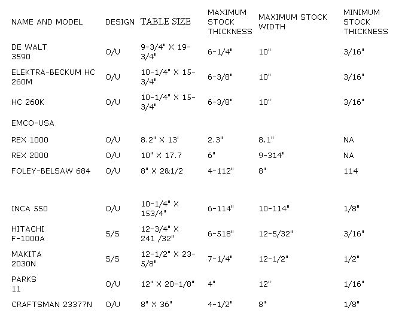
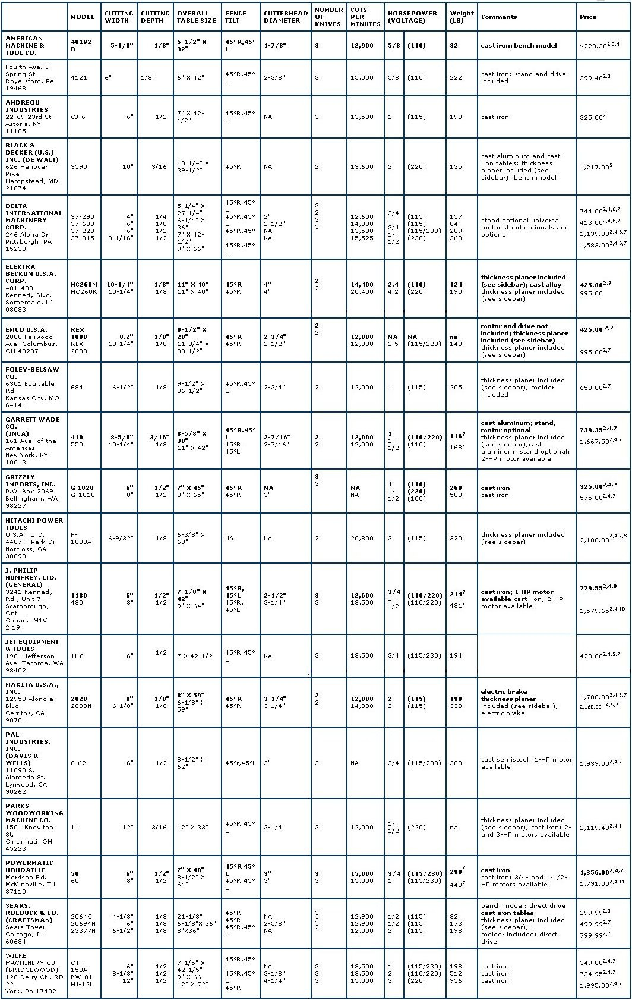

A good jointer can save untold time and expense in any woodshop. As its name implies, this tool is used to prepare stock for smooth, matching joints . . . essentially by removing a board's high spots to create a straight slab of wood with face sides and edges.
Its mate, the thickness planer (surveyed in MOTHER N0. 97), can make a highly accurate cut once it has a true side to reference, so many manufacturers offer combination jointerplaners to satisfy the need for both tools in one compact unit. (See the accompanying sidebar for additional information.)
Despite the differences in appearance between jointers of various manufacture, the tools function in essentially the same manner. A cylindrical cutterhead equipped with two or three full-length knives is mounted on a frame and driven at speeds of up to 10,000 revolutions per minute (RPM), either by belt or directly by the motor shaft. Separate tables, mounted before and after the cutterhead on inclined ramps, or ways, can be individually raised or lowered in increments to expose the knife edges by degrees. A pivoting safety guard uncovers the blades as the work passes over the cutterhead.
To accommodate bevel and rabbet cuts, a fence is fastened to one side of the tables. It's usually made to tilt 45° to the right and left and can also be moved laterally across the feeding surface. Generally, the entire unit is mounted on a stand or cabinet at a comfortable working height, but some manufacturers offer benchtop models as well.
In most stationary tools-and the jointer is no exception-substantial mass is desirable to dampen vibration and maintain accuracy. A castiron frame and cast-iron components certainly have the benefits of strength and warp resistance, but if portability is a concern, cast alloy offers similar characteristics with a reduction in weight.
The tables, too, affect the precision of the work. It stands to reason that the longer the infeed and outfeed surfaces, the greater the consistency of the cut. Unfortunately, many woodworkers simply don't have room to accommodate a 5-1/2-foot bed . . . but some might find a happy medium in designs with folding table extensions which can be dropped for storage. Ideally, the tables should be fastened to the jointer frame in a manner that allows as little play as possible throughout the platforms' range of adjustment. Ramps equipped with dovetailed or slotted-channel ways afford a minimum of unwanted movement.
Since the cutterhead is the heart of the jointer, its design is critical to the machine's performance. Naturally, the drum spindles should be equipped with ball bearings and the entire unit balanced for high-speed operation. This is especially important in cutterheads with two blades, since they must spin faster to maintain the rate of 12,000 or more cuts per minute. Too, the diameter of the cutterhead has a direct effect on the quality of the finished stock: A larger drum has a shallower arc, which in turn produces a smoother, less rippled cut.
A well-designed fence can make the difference between an ordinary tool and a truly versatile one. It should go without saying that the fence should be firmly mounted and at least half the length of the overall table. At least one manufacturer offers a fence that, in addition to tilting and sliding, can be skewed, or angled, on a pivot to facilitate cutting certain species without damaging the stock. For safety, all models with a laterally adjustable fence should have a provision for guarding the exposed part of the cutterhead behind the fence face.
The size of the drive motor will depend upon the capacity of the jointer and the type of work you plan on doing with it. A 6" machine with 3/4 horsepower would more than likely be adequate for a hobbyist dressing odd pieces of mixed stock. On the other hand, someone working with larger hardwood boards on a regular basis would probably be better off with a 10" or 12" jointer coupled to a motor with 1-1/2 or more horsepower. Be careful not to interpret horsepower claims as the sole measure of a machine's cutting ability; some manufacturers state peak, rather than continuous, power, so it's best to use the motor's amperage rating as a standard. Ten amps of power is equivalent to about 1 horsepower at 110 volts, or 2 horsepower at 220 volts.
Once you've established the capacities and capabilites you'll need in a machine, you can begin looking for the finer points that separate the cream of the crop from the run of the mill. Try to ascertain the effectiveness of the cutterhead guard throughout its full pivoting range, but by the same token be certain it's unobtrusive enough that you'll never be tempted to circumvent or remove it. Check to see that the tables move up and down freely and consistently, with a minimum of effort. It helps, too, when one turn of the adjustment wheel represents a stated measure of movement. And look for accurate, easy-to-read scales in a convenient location.
Since the adjustment of the knives on the cutterhead are of major importance, pay particular attention to the blades' accessibility and the ease with which they can be replaced or adjusted. Some manufacturers have had the foresight to come up with knife gauges or other implements to assure correct settings, so don't forget to ask.
Generally, the machine should be solid enough to take the day-to-day knocks that regular use will expose it to. Be sure, however, that you investigate the warranty and the availability of parts and service. In the end, the amount of time you put into researching your purchase will show up in the quality of work you get out of it.
The jointer and the thickness planer are subordinate only to the table saw in the hierarchy of woodshop stationary tools. That's because once a board has been rough-cut to size, it must be faced and edged to make it smooth and square in preparation for working.
Since the jointer has the ability to remove high spots, warp, and other inconsistencies which keep a board from being perfectly straight, that tool should be used first to dress one side of the rough stock. Then, with that face flat, the thickness planer can be put to use surfacing the board's opposite side to make both faces parallel.
In view of the fact that the jointer and planer work hand in hand, at least nine manufacturers have combined both tools into one compact machine that performs both functions. Domestic and European firms favor an over-and-under design in which the same cutterhead does both the jointing and planing. The Japanese are partial to a side-by-side setup in which two separate cutterheads share a long shaft.
Each version has its pros and cons, but the major points to remember are that [1] the overand-under models can joint and plane stock of equal width, but at the cost of resetting the machine for each function; [2] the side-bysides, though readily accessible for either operation, have jointer widths only half those of their planers; and [3] over-and-unders lack the extra-long jointer tables featured in their oriental counterparts.
The chart above will help you decide.
|
 |
 |
|